I began working on Spektra as a student with CareerFoundry. The
project brief was for an app called Pluto Pay - a web app that
allows anyone to shop, transfer money, and more without a debit
or credit card or the need to visit a physical bank or store. My
role was to create a new app design from beginning to end. I was
responsible for all UX duties, including user research,
producing all significant deliverables, and providing a
consistent exposition of my design process. I decided to take
this project a step further and focus specifically on designing
an app for young adults with ADHD who struggle with their
personal finances.
Role
Lead UX Designer, UX Research
Tools
Figma, Google Suite, OptimalSort, Adobe XD
Tiemline
2022-2023
The Process
Possible Problems
A busy interface that contains too much information and
overwhelms users
Lack of incentives that allow users to avoid checking the app
The organization of the app is too rigid for individuals to
set themselves up for success
Initial Hypothesis
Spektras users with ADHD need an intuitive, organized, and
personalized way to take control of their finances, improve
their money management skills, and feel more confident in their
financial decision-making. We will know this to be true when we
observe a significant increase in the number of users who are
able to successfully reach their financial goals with our app.
Main Goals
Users need the ability to personalize their experience
Give users visual insights into their spending habits
Don't hide information! Keep things simple and visible as much
as possible
Phase 1: Inspiration
Discovery &* Research
Before I could even being thinking about what Spektra might look
like or it exact features, I needed to conduct some research.
First with competitive analysis and content audits of related
apps, followed by user research in the form of surveys and
interviews.
This process took roughly 3 weeks
COMPETITIVE ANALYSIS
To set the stage for this project, I started off by conducting a
competitive analysis of some relevant and related apps in Canada.
KOHO is the closest comparison to Spektra as they focus on a
similar target demographic, and tries to help users with spending
and saving habits. Their weaknesses and opportunities helped me
the most to understand where Spektra might be able to fit into the
market.
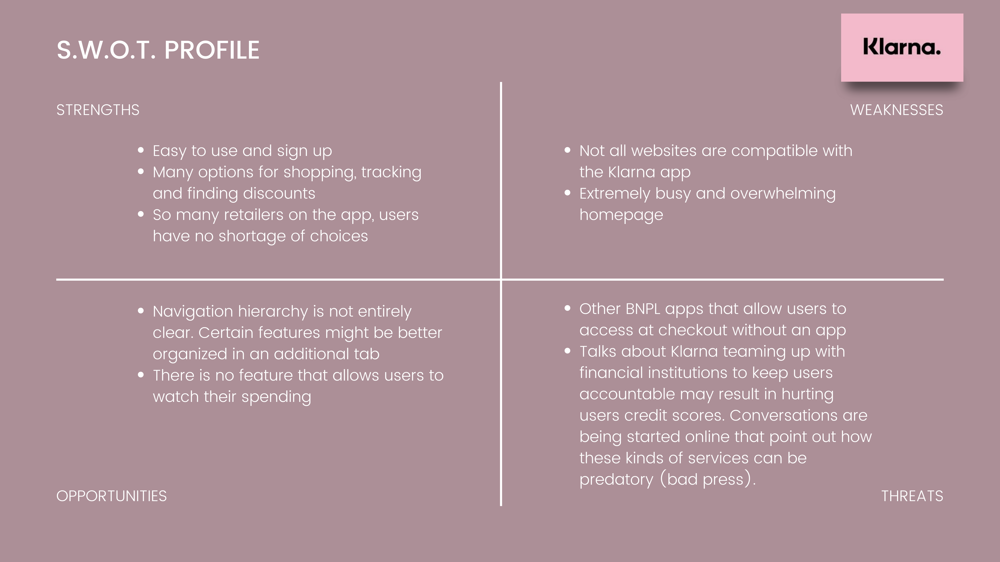
USER RESEARCH
User Survey
The first round of user research was a short survey conducted
remotely through google forms. 8 participants completed the survey
comprising 16 questions with a mix of multiple-choice,
short-answer, and rating scale responses. Using this survey, I
hoped to begin gaining insights into how people generally feel
about their finances.
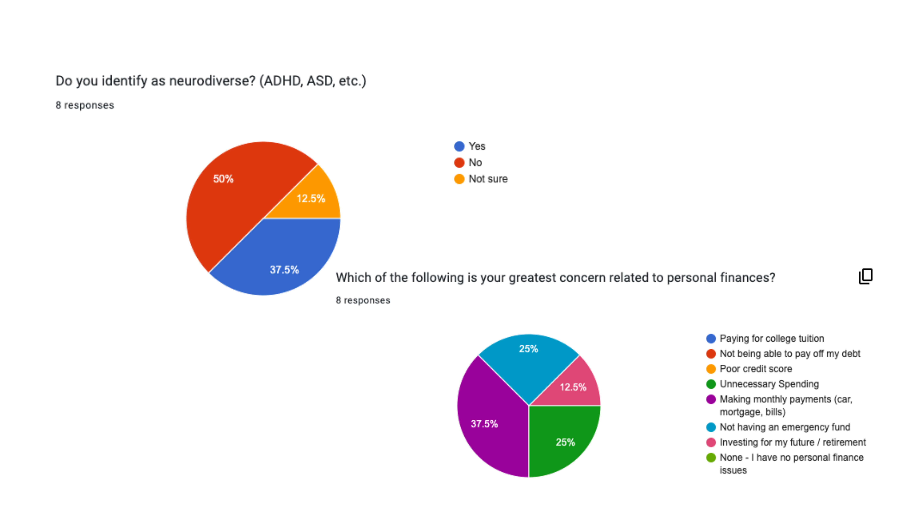
The responses collected from this survey were foundational to my
understanding of my future users pain points. Particularly helpful
was the question asking participants to select which struggles
they face with their personal finances. Of the 8 possible choices,
participants indicated that their greatest conserns centred around
monthy payments, emergency funds, future investments, and
unnecesary spending. The trends that occurred in that question
would be very beneficial to me when deciding which features were
the most important to focus on first with the new app.
Additionally, I wanted to see how the individuals who identified
as being neurodivergent answered the questions as compared to
those who didn't. I also thought it was interesting to note how
participants feel generally worried about their finances,
yet most are very optimistic about improving them!
USER INTERVIEWS
The responses gathered from the user survey helped me to
curate 13 open-ended questions to allow me to gain more
insight in user interviews.
I conducted 4 in-person user interviews over the course of a
week. Participants were invited to join me for a coffee or
light meal as I guided them through the interview questions.
The questions were intended to help me understand these
participants’ needs, goals, and timeframes around their
finances as well as their background and attitudes towards
current apps in the market.
Research Goals
What are users’ pain points when it comes to managing their
personal finances?
How confident do users feel about their money management?
What do users want from their ideal financial app?
KEY TAKEAWAYS
RESEARCH SYNTHESIS
The amount of feedback I received from conducting user research
was abundant! Lots of the responses confirmed my hypothesis but
also challenged it. In order to distill specific insights from
this information, I decided to create four affinity maps of all of
the responses from my user interviews. These affinity maps are;
behaviours &* attitudes, needs &* goals, frustrations, and quotes
&* facts. These insights have challenged my own beliefs about what
is best for users, and have also been extremely helpful for me to
move on to the next steps of my design process.
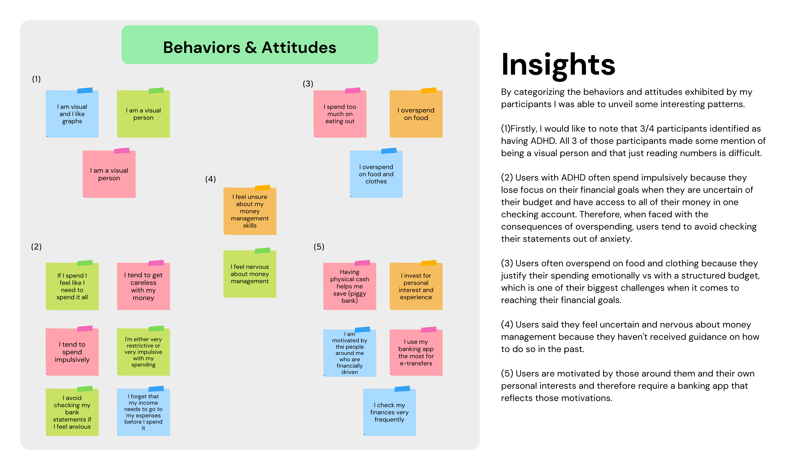
TAKING A STEP BACK...
Although I initially intended to concentrate specifically on
young adults with ADHD, I soon realized that young adults in
general—neurodivergent or not— are having trouble focusing and
finishing crucial tasks as they are faced with constant
distractions on their devices.
In light of this realization, I had to update my hypothesis
before I continued in the design process.
UPDATED HYPOTHESIS
Spektra's young adult users need an intuitive, organized, and
personalized way to take control of their finances, improve
their money management skills, and feel more confident in
their financial decision-making. The app must minimize
interruptions and promote focus to enable users to make
progress toward their financial goals
We will know this to be true when we observe a significant
increase in the number of users who are able to successfully
reach their financial goals with our app.
PHASE 2: CONCEPTUALIZATION
POV &* IDEATION
Based on the updated hypothesis and the data collected, the next
step is to start designing the interface of spektra. This process
involved using the information gathered to create an interface
that is user-friendly and meets the needs of the target audience.
With careful consideration of the user experience, the interface
should be intuitive, visually appealing, and efficient.
WHO AM I DESIGNING FOR?
Through my research, I identified two distinct user groups and
decided to create personas to help me design Spektra's interface
to better meet their needs.
Sophia was chosen as the primary persona
since she represents the largest segment of our target audience -
young adults with ADHD who are working towards better money
management.
Isabelle, the secondary persona, represents a precursing
demographic of students with very tight incomes who want to learn
how to save. By understanding their financial goals, pain points,
and behavioral patterns, we can create an interface that is
tailored to their needs.
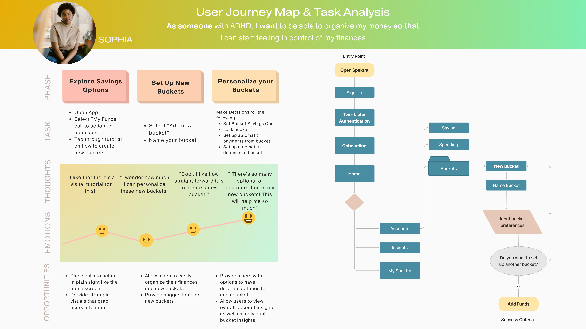
INFORMATION ARCHITECTURE
After creating personas for Spektra's users, I moved on to
ideating a site map for the app's interface. The site map is
essentially a visual representation of the app's information
architecture and hierarchy, providing a clear overview of its
navigation and content structure. To create the site map, I needed
to consider the main features, pages, and interactions that users
will encounter while using the app, and ensure that the site map
reflects the needs and preferences of both personas. It was
important to keep the information architecture intuitive and
user-friendly so that users can easily find what they need and
navigate the app without any confusion. Overall, by creating a
detailed site map, I was able to better visualize the app's
structure and content, and use it as a guide as I began drawing up
the first wireframes.
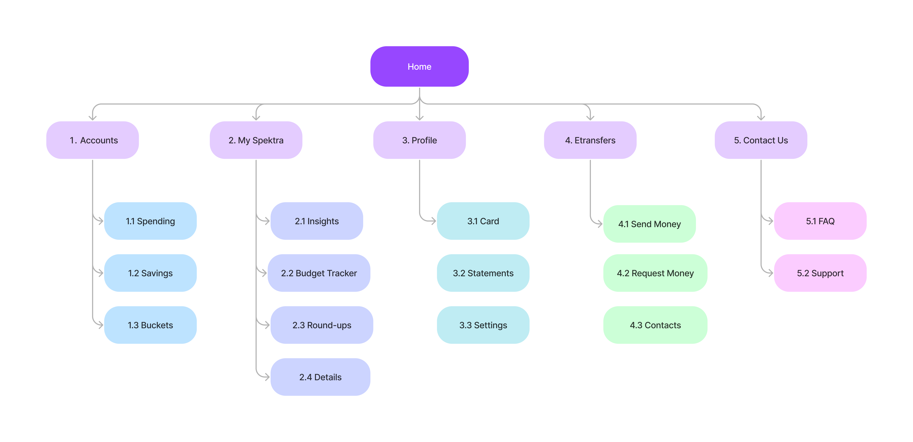
RAPID PROTOTYPING
Finally, after several rounds of user research, ideation,
dwelling, twiddling my thumbs, staring thoughtfully out my
window, and pondering, I was ready to begin drawing the very
first wireframes.
I began by sketching out about 50 super ugly wireframes,
playing with the layout and the hierarchy of information. I
wanted to focus these rapid prototyping sessions on three main
features that I believe will be the most beneficial for our
users;
Buckets (now 'Wallets')
Round-ups
Budget Tracker (now 'Insights')
These example prototypes are the first flows for setting up
the round-ups feature. This user flow has probably changed the
least throughout all of the iterations. I loved building this
feature however because it helped me remember that not every
flow needs to be a whole process, round-ups set up is short
and sweet :)
Phase 3: iteration
Prototype & Test
USABILITY TESTING
I conducted six usability tests on the new Spektra prototype
from August 21-26th. Three tests were conducted in person and
three were conducted online through google meet. Participants
were asked to share some background information about
themselves and then they were asked to complete four tasks
using the prototype. Usability Test Plan
With all of the responses I obtained from conducting the
usability tests, I created several data visualizations in
order to better understand the pain points that existed so far
as well as the positive feedback on the interface. These data
visualizations included an affinity map and a rainbow
spreadsheet. For the sake of brevity, I have only included
some key takeaways in this case study.
To set the stage for this project, I started off by conducting a
competitive analysis of some relevant and related apps in Canada.
KOHO is the closest comparison to Spektra as they focus on a
similar target demographic, and tries to help users with spending
and saving habits. Their weaknesses and opportunities helped me
the most to understand where Spektra might be able to fit into the
market.
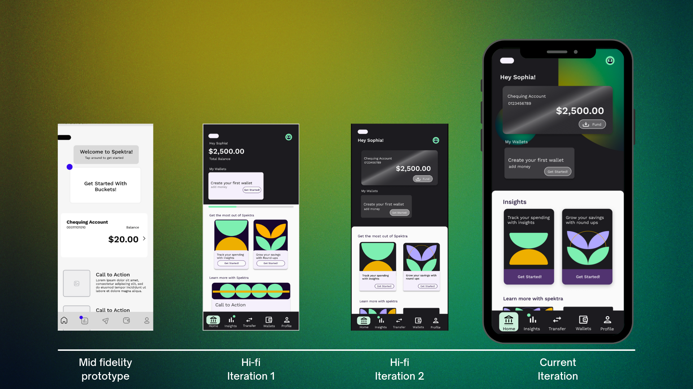
HOME SCREEN ITERATIONS
The design of the home screen has posed a significant
challenge as I strive to display all essential information in
a clear and accessible manner. With each iteration, I have
built upon the previous version, experimenting with new ways
to draw the user's attention to the most important content.
Notable examples include a complete layout overhaul from
mid-fidelity to hi-fi #1, and the modification of the CTA card
color and hierarchy from hi-fi #2 to our current iteration.
INNOVATIVE FLOWS
When I first tested the wallets feature with users, they found
it confusing, frustrating, and boring. Many people also said
they didn't want to put money into their wallets right away.
In an attempt to mediate these issues, I broke down the form
field into two steps.
Naming the wallet and category (mandatory)
Setting goals and dates (skippable)
Users are not prompted to add funds to their wallet until they
have created it. This allows for more flexibility and
personalization, with fewer steps in the initial setup.
PHASE 4: EXPOSTITION
DESIGN SYSTEMS &* FINAL PRODUCT
Spektra has an authentic voice that speaks to its users and makes
them feel comfortable. This casual approach also allows Spektra to
break down complex or daunting financial language into more
digestible terms for users new to the game!
COLOURS
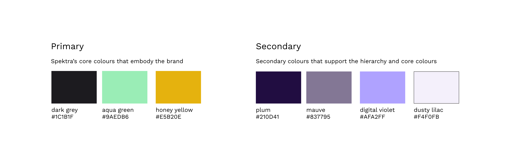
TYPOGRAPHY
UI ELEMENTS
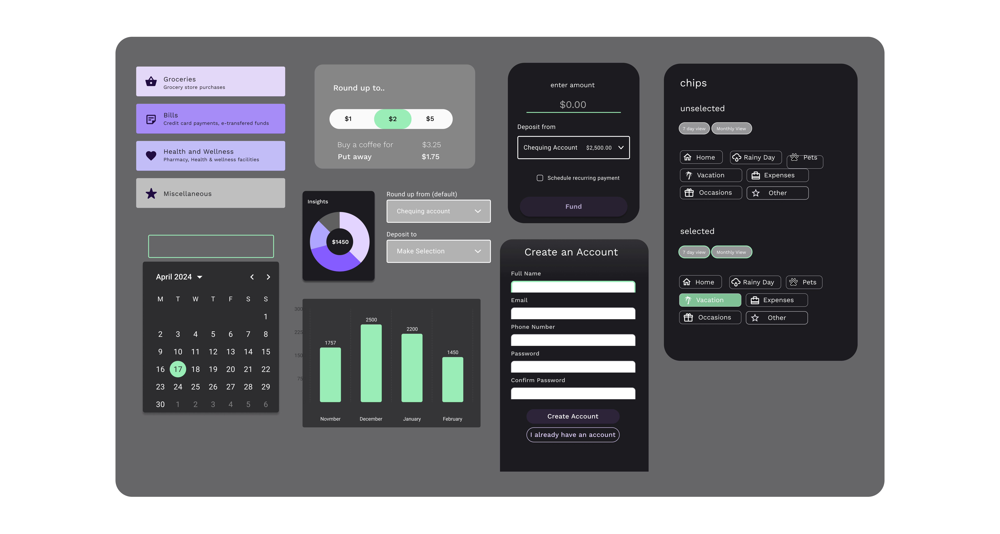
final product
ACCESSIBILITY UPDATES
Before I could launch the final product it was important that I
take steps to ensure that my design met accessibility standards.
In order to do this, I enlisted the help of 5 other UX design
students as well as some friends and family to test out the latest
version of the Spektra prototype. The feedback from my
CareerFoundry peers was especially helpful and helped me update my
design to be as inclusive as possible. I have included some of the
more significant changes below along with my solutions/
reasonings.
ONBOARDING
issues
text fields missing place holders
text colour contrast fails
changes made
label of field exists within the field until user clicks to
enter information
when user clicks field it will be outlined in a different
colour to indicate they are on that field, label will move
above the field and additional text will appear as a
placeholder to indicate/clarify what the user needs to
enter.
label colour changed from #B0B0B0 to #D9D9D9. This colour
change has passes the Luminosity Contrast Ratio test at
level AAA for both regular and large text.
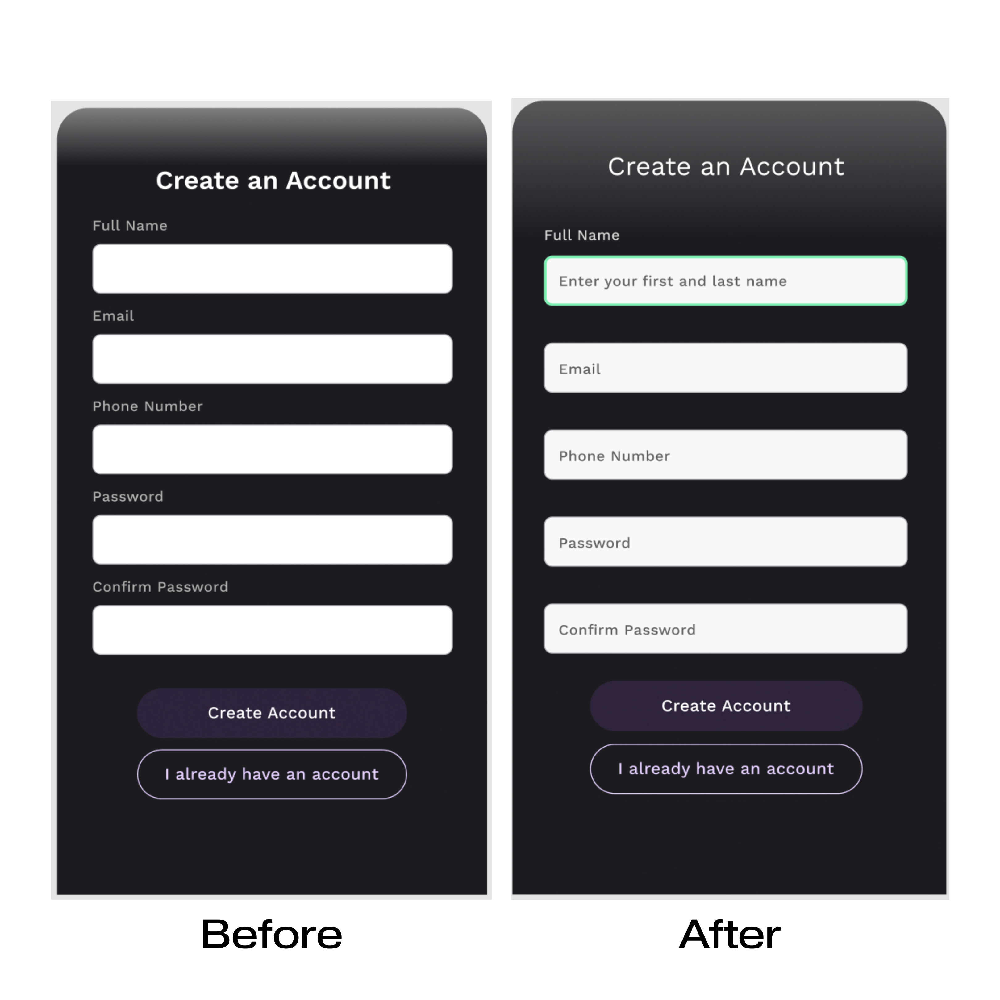
Home screen
issues
CTA button too small
Card buttons colour contrast fails
changes made
Redesigned CTA card for better hierarchy and less crowding.
Users eyes are drawn towards 'get started' button
Button is much larger and meets guidelines for spacing and
touch points.
Fill colour of buttons on wallet and chequing account cards
changed from #FFFFFF at 44% opacity to 25% opacity for a
contrast ratio that passes level AA for regular test and AAA
for large text.
INSIGHTS
issues
MTD/7 day view chips colour contrast fail
Graphics need descriptions
changes made
fill colour of '7-day view' and 'Monthly view' from #FFFFFF
at 58% opacity to 25% opacity for a contrast ratio that
passes level AA for regular test and AAA for large text.
pie chart was given a label to clarify what the graphic is
for
future changes
Graphics must have a better description for users who cannot
depend on colour coding